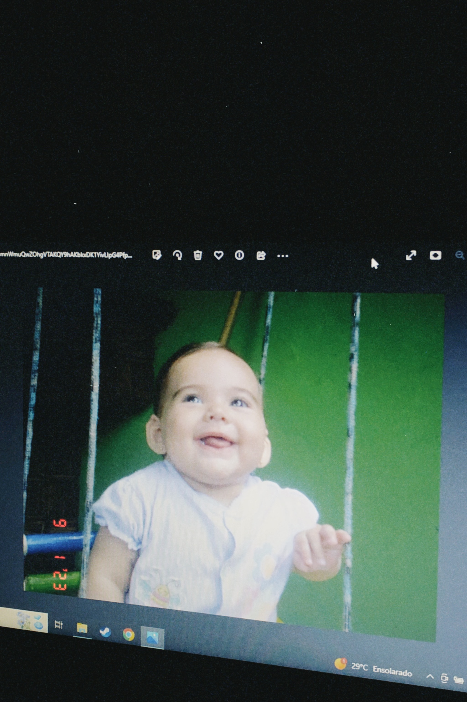

Minha história
Nascida na cidade de Campinas, interior de São Paulo, no dia 30 de Abril de 2007. Gabriela é uma garota de 16 anos, que atualmente esta em seu último ano escolar, mas que pensa sempre no seu futuro. As dúvidas repentinas de como será a faculdade, de como vai ser a rotina, novas pessoas, amigos.. Sempre enfrentando desafios novos, Gabriela leva a vida com leveza e muita felicidade, apesar de sempre ser insegura e medrosa em relação ao seu futuro.
